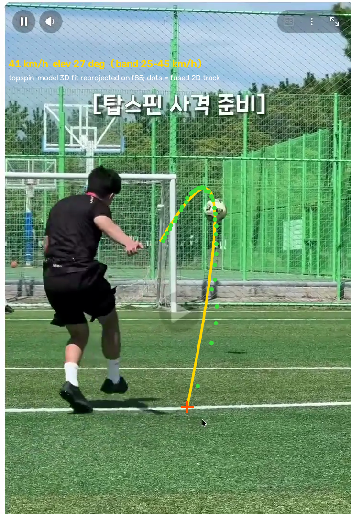
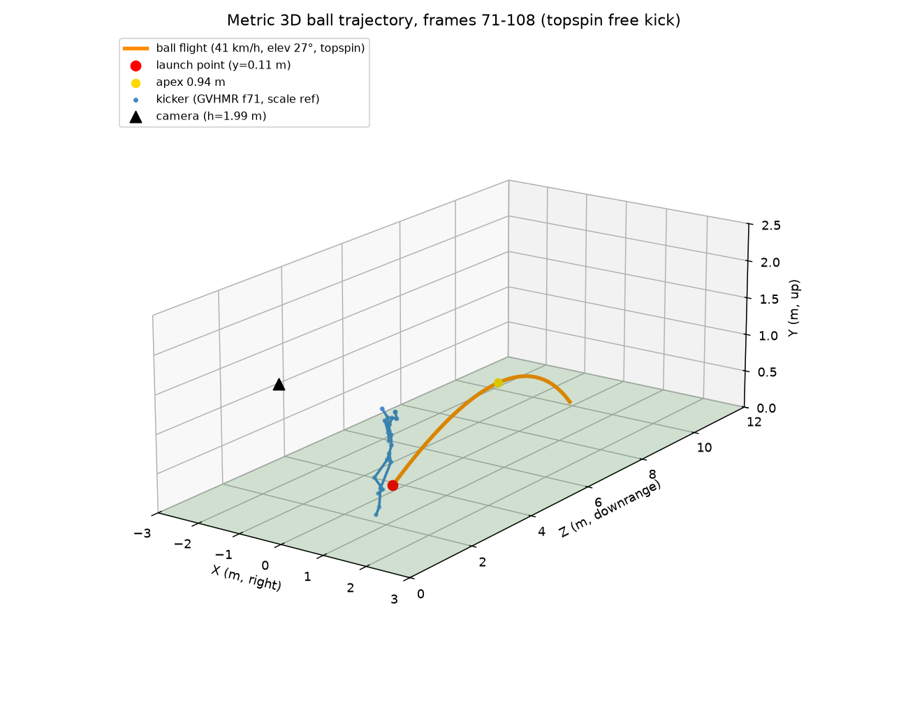

End-to-end validation of the vxbrandon/opencap-monocular fork: a single 5-second smartphone clip of a right-footed free kick, processed to full-body 3D kinematics (WHAM → camera/pose optimization → OpenSim scaling + inverse kinematics) on an AWS g5.2xlarge (NVIDIA A10G).
Wall-clock per stage for the standalone pipeline (run_mono_standalone.py), single warm A10G GPU.
2D detection + ViTPose wholebody + WHAM world-frame lifting dominates at 83% of pipeline time.
| Stage | seconds | share | What runs |
|---|---|---|---|
| Model load (one-time) | 17.9 | — | WHAM network + ViTPose+ huge wholebody + YOLOv8x onto GPU |
| WHAM stage | 86.8 | 82.7% | YOLO detect → ViTPose 2D (133 kpt) → feature extraction → WHAM 3D + SMPLify refit |
| Optimization + OpenSim | 18.0 | 17.1% | camera/pose optimization (75 iters) → model scaling → inverse kinematics |
| Visualizer JSON | 0.2 | 0.2% | mono.json for the OpenCap viewer |
| Pipeline total | 104.9 | 100% | excludes one-time model load; 0.52 s per processed frame |
Sagittal-plane angles from the scaled LaiUhlrich2022 model, right (kicking) vs left (support) leg. The kick reads clearly: deep right-knee flexion to 127° in the backswing, then extension at ~1977°/s through ball contact, with hip flexion range 104° on the kicking side.
| Coordinate | min ° | max ° | range ° | peak |ω| °/s |
|---|---|---|---|---|
| Knee flexion — right (kicking) | 12.0 | 127.0 | 114.9 | 1976.5 |
| Knee flexion — left (support) | 9.3 | 85.1 | 75.7 | 638.7 |
| Hip flexion — right | −18.7 | 85.4 | 104.1 | 588.4 |
| Hip flexion — left | −16.9 | 38.1 | 55.0 | 281.4 |
| Ankle angle — right | −9.2 | 22.8 | 32.1 | 505.0 |
| Ankle angle — left | −0.6 | 26.1 | 26.7 | 269.2 |
| Pelvis tilt | −6.0 | 8.0 | 14.0 | 77.6 |
| Lumbar extension | −29.2 | −7.9 | 21.2 | 175.0 |
Peak knee extension velocity of ~1980°/s sits inside the 1200–2200°/s range reported for adult instep kicks. Known artifact: left-arm flexion shows an angle-wrap discontinuity (−379°) in a brief occluded stretch; excluded above.
SMPL body mesh recovered by WHAM, rendered two ways: composited onto the original footage (official WHAM renderer, pytorch3d), and as a world-frame mesh + 24-joint skeleton with an orbiting camera. The full per-frame SMPL parameters and key-pose OBJ meshes are downloadable below.
SMPL body mesh overlaid on the clip — WHAM's pytorch3d renderer, camera-frame fit.
World-frame body mesh (left) and 24-joint SMPL skeleton (right), synced orbiting camera.
2D wholebody keypoints (ViTPose+ huge, 133 kpt) tracked on the original clip — 202/264 frames annotated.
Optimized 3D marker skeleton (63-marker TRC, hip-centered camera). Full interactive mesh: load mono.json at visualizer.opencap.ai.
Following a 26-method survey of 2024–2026 monocular HMR research, GVHMR (SIGGRAPH Asia 2024) was trialed on the same clip. It beats WHAM on every published world metric (foot-skate 3.5 vs 4.4 mm, trajectory error 2.0% vs 6.0%) — and on this A10G its model stage ran in 0.63 s vs WHAM's ~47 s (SMPLify included), with 39.3 s of shared preprocessing (YOLO + ViTPose + features) now clearly the bottleneck. It also tracked all 264 frames (WHAM: 202).
| Stage | WHAM path | GVHMR path |
|---|---|---|
| Preprocessing (detect + 2D pose + features) | ~40 s | 39.3 s |
| Motion model (3D lift, world frame) | ~47 s (incl. SMPLify refit) | 0.63 s |
| Frames with pose | 202 / 264 | 264 / 264 |
Side by side on the strike: WHAM/opencap-monocular overlay (left) vs GVHMR in-camera overlay (right).
GVHMR world-frame (gravity-view) motion. Full overlay: 1_incam.mp4 · raw SMPL-X params: hmr4d_results.pt.
Styled render stage prototyped from GVHMR's world-frame SMPL-X output — the look intended for the stryke/heroshoot product: studio-dark arena, key + rim lighting, supersampled. Two v1 styles:
Solid body mesh — pearl-blue metallic material, orbit camera.
Hologram — translucent ghost body + glowing 22-joint skeleton.
Prototype (2026-08-14): three competing 2D ball trackers (frame-differencing, Hough/white-mask, optical flow) were fused into one track (37 observations, frames 72–111, camera pan stabilized), then a physics-constrained fit — gravity as the metric ruler, launch point on the ground at the known contact frame, GVHMR body scale as cross-check — recovered the 3D flight. A pure ballistic model left a 65 px S-shaped residual; adding spin terms resolved it — the fit converged on heavy topspin with a leftward curl, independently corroborated by the clip's own caption ("탑스핀 사격 준비"). This is a short ~7 m topspin training shot into a close goal, not a long match free kick — 40 km/h is the expected class.

Fitted 3D trajectory reprojected onto the footage (orange) vs the fused 2D track (green dots).

Metric world-frame flight: launch point, apex, kicker skeleton as scale reference. trajectory3d.json
Honest caveats: single uncalibrated (and slightly panning) camera → the band spans the no-spin interpretation (25 km/h)
through the preferred topspin model's intrinsics/tilt sweep (37–45 km/h); fitted spin forces (~0.9 g) likely absorb some ball-radius bias; assumes the clip is real-time.
The recording-requirements spec (TBG-DOCS/plans/23-stryke-heroshoot/ball-trajectory.md) exists to shrink exactly these terms — original file (no screen recording), tripod, 240 fps, side-on view, goal in frame.
The fork is now turn-key: six gaps were found on a clean INSTALL_SLIM.md install and fixed in
installation/bootstrap_fork.sh + installation/FORK_SETUP_NOTES.md (commit 5bd4b88).
mmcv ≤ 1.5.0 against the documented mmcv-full 1.7.2 → version gate relaxed post-install.WHAM/demo.py loads vitpose+_huge_wholebody/wholebody.pth, which fetch_demo_data.sh never downloads → sourced from the easy_ViTPose HF mirror (2.5 GB).opencap-visualizer + Playwright Chromium missing from requirements_slim.txt → installed; note: its remote-viewer recording currently fails against the deployed app (camera API mismatch), so the videos above are rendered directly from pipeline outputs.conda install -c nvidia/label/cuda-11.8.0 cuda-toolkit, then CUDA_HOME=$CONDA_PREFIX pip install git+…pytorch3d.git@v0.7.5 (~10 min on 8 cores).ffprobe is a hard prerequisite before WHAM (video rotation probe) → apt install ffmpeg.utils/opensim/defaults.py expects model_transfer/smplx_to_smpl.pkl; the fetch script delivers the same matrix as body_models/smplx2smpl.pkl → symlinked.Also observed upstream: output_trimmed.mp4 is written empty (0 bytes) and the viewer-video step is hardcoded off (viz = False in run_mono_standalone.py).
| Instance | AWS g5.2xlarge (8 vCPU, 32 GB, NVIDIA A10G 24 GB), us-east-1, Deep Learning Base GPU AMI (Ubuntu 22.04) |
| Stack | Python 3.9 · torch 2.1.2+cu118 · mmcv-full 1.7.2 · mmpose 0.24.0 (ViTPose) · OpenSim 4.4 · numpy 1.21.6 |
| Subject metadata | 1.75 m / 70 kg / male (defaults — subject unknown); generic intrinsics fx=fy=1290 for the 734×1074 portrait crop |
| GPU lifetime | Run 1 (kinematics): 07:03–08:40 UTC ≈ $1.96 · Run 2 (mesh renders, scripted setup): 10:54–11:18 UTC ≈ $0.50 → ≈ $2.46 total on-demand |
{kind=link}